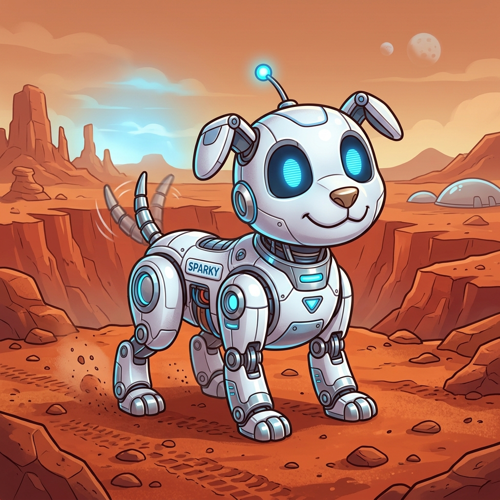
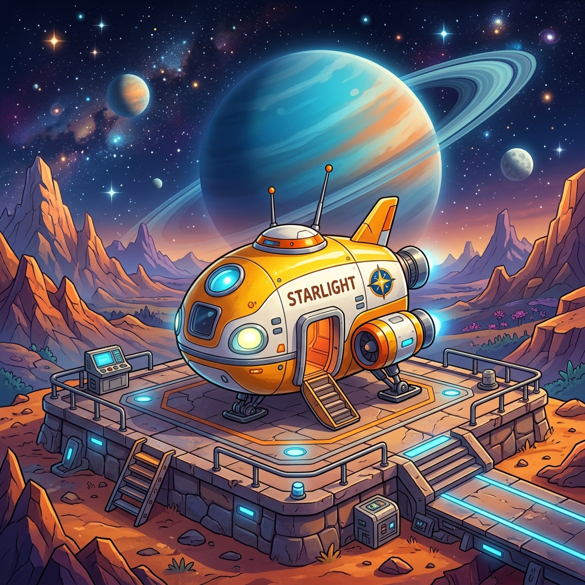

About the Explorer
Leo grew up on a small moon colony. Ever since he was a kid, he loved looking at the stars and fixing old machines. When he turned twenty, he saved up enough money to buy an old yellow spaceship named the Starlight.
Today, Leo travels to new planets to map unknown lands and collect rare space rocks. He is never lonely because his best friend is Sparky, a small mechanical dog he built from scrap parts. Together, they help stranded astronauts and discover quiet, beautiful places across the galaxy.
The Ship: Starlight
The Starlight is a small, solar-powered scout ship. It has strong landing legs, an automated airlock, and engines built to fly through asteroid fields safely.
Essential Gear
Leo never journeys alone. Sparky can scan rocks, search for underground caves, and light up dark areas with his glowing blue eyes.
Gear Checklist
- Solar Spacesuit: A warm, lightweight white suit powered by sunlight.
- Sparky the Robot Dog: A loyal companion that can scan rocks and shine a light in dark caves.
- Handheld Scanner: A pocket device used to find water and safe paths.
- Star Map Tablet: A digital map that shows all the planets they have visited.
Space Adventures
Here are four of Leo and Sparky's biggest missions:
- The Blue Moon Rescue — : Saved a lost cargo ship stuck in an asteroid belt.
- Finding the Crystal Cave — : Discovered glowing rare green crystals under the ice on Planet Frost.
- The Sandstorm Escape — : Escaped a massive red dust storm on Mars with help from Sparky's sensors.
- The Deep Crater Discovery — : Found ancient water pools hidden deep inside a silent crater.
Image Gallery


Space Resources
Learn more about real space exploration:
- Visit the official NASA website to see current Mars missions.
- Read the Wikipedia article on Mars to learn about the red planet.